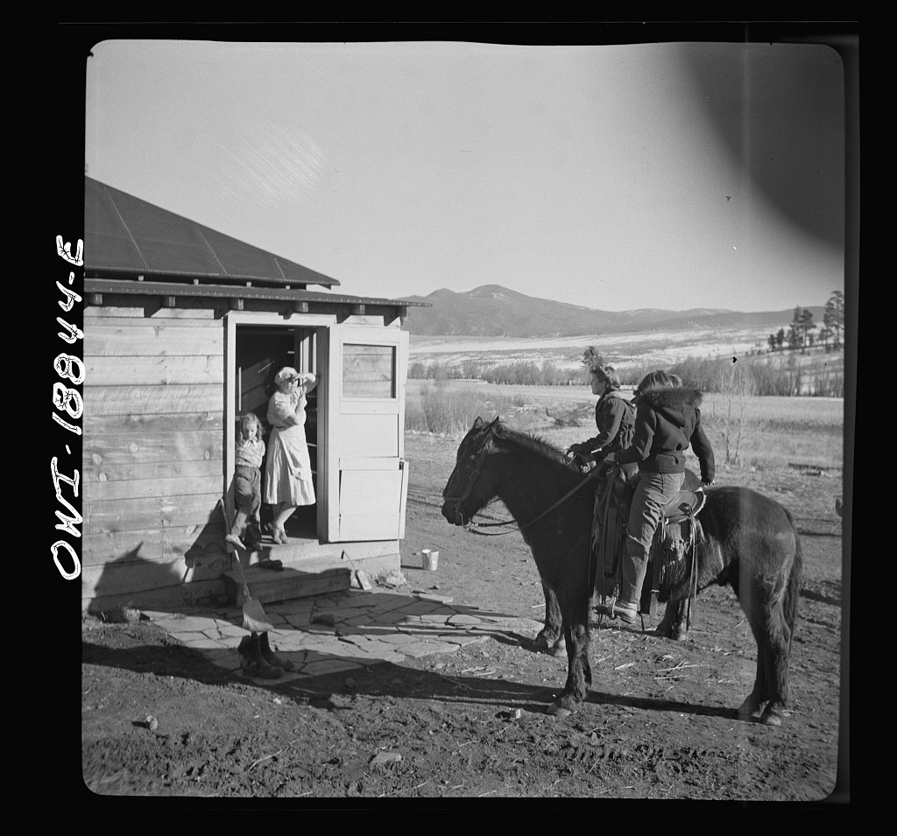
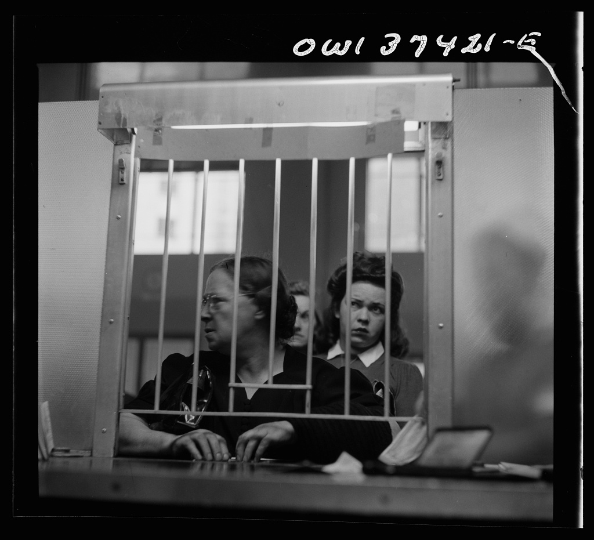
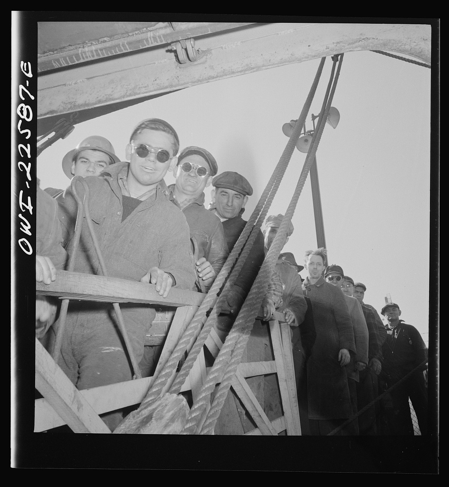
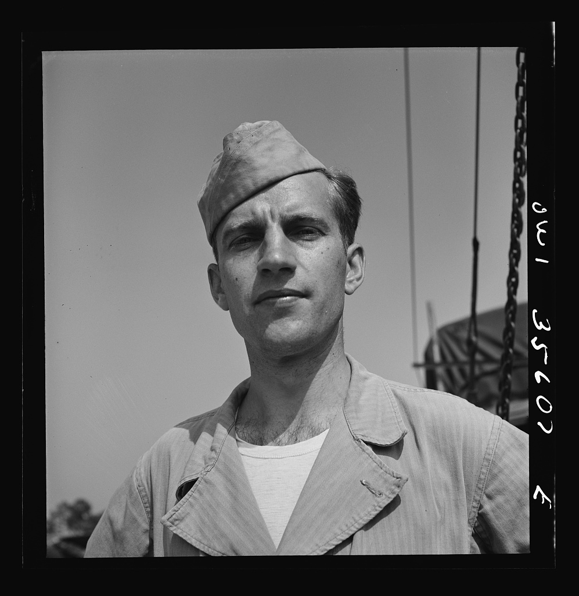

Sunday · Psych / soc
: the concept, then who waited for the flood in 1954
What claimed about inconsistent cognitions creating psychological discomfort, then the case study : , group in and , the prophecy of a flood for , and how commitment intensified when the prophecy did not come true.

This lesson presents as a theory about how people respond to inconsistent cognitions, then teaches the case study as fieldwork, not as comedy. , , and infiltrated a small UFO group in 1954–55 and published their observations in 1956. (the book's ) is now publicly identified. The group was small. The prophecy was for ; when the flood did not come, many members increased their proselytizing rather than abandoning the belief. This is a mechanism and a case, not a universal law. Do not treat the participants as a punchline. Later replications and critiques are noted in After.
Select any words, or tap a dotted term.
- Early 1950s Festinger's early work , at and then the , studied social comparison and informal social communication. The framework was developing.
- 1954 Dorothy Martin's messages , in , Illinois, reported receiving messages from and other planets. A small group of believers formed around her teachings.
- Aug–Dec 1954 The prophecy Martin's messages predicted a great flood would destroy much of North America on . Believers would be rescued by beforehand. and colleagues began observing.
- 21 Dec 1954 The date passes No flood occurred. No spacecraft arrived. Instead of disbanding, many Seekers intensified their commitment and began calling newspapers to share their message.
- 1956 When Prophecy Fails , , and published : A Social and Psychological Study of a Modern Group that Predicted the Destruction of the World.
- 1957 The theory published , the full theoretical statement. case was one exhibit among many.
- 1959 Induced compliance published their on , showing that small rewards can lead to greater attitude change than large ones.
- 1960s–present Replications and revisions became a major framework in social psychology. Later work refined the theory, tested boundary conditions, and proposed alternative accounts.
The concept
What cognitive dissonance claims: inconsistency creates discomfort
is a theory about psychological discomfort. , writing in the 1950s, argued that when a person holds two or more inconsistent cognitions — beliefs, attitudes, or knowledge of their own behavior — that inconsistency creates an unpleasant tension. The mind does not like contradiction. So the person acts to reduce the . They might change one of the beliefs to fit the other. They might add new cognitions that make the inconsistency less stark. They might decide the whole thing is not important. The theory does not say which path will be chosen, only that the pressure to choose one exists.
This is not a claim about logic. It is a claim about motivation. The discomfort is real, not just a scoring error in a syllogism. It pushes people. And because it pushes, it can produce strange outcomes. A person who is made to argue for a position they do not believe may come to believe it a little more, especially if they were paid too little to justify the lie. A person whose deeply held prophecy fails may proselytize harder afterward, if the conditions are right. The theory says the inconsistency matters because it hurts, and people will work to make it stop hurting. That work is .
's framework was one answer to a question social psychology had been asking: why do attitudes change? The behaviorists had said reinforcement. The cognitive theorists wanted something closer to thought. said: sometimes the mind changes itself because leaving two ideas side by side is intolerable. It is a middle path, neither pure stimulus-response nor pure rational calculation. It is a mechanism that assumes people care about consistency, at least enough to rearrange their inner furniture when the inconsistency gets too loud.
The mechanism
How Festinger and colleagues tested dissonance in the lab and the field
's first major statement of the theory came in 1957, in , published by Press. But the fieldwork that gave the theory its most vivid exhibit came earlier. In 1954, , , and learned of a small group in the Chicago area that had predicted the end of the world. , a housewife in , Illinois, reported receiving messages from beings on the planet . The messages warned of a great flood that would destroy much of North America on . A would rescue the faithful before the cataclysm.
The researchers saw an opportunity. They posed as interested seekers and joined the group, observing from inside as the date approached. The group prepared. Members quit jobs, left spouses, gave away possessions. The belief was firm. The commitment was high. was strong. On the night of 20–21 December, the group gathered and waited. No saucer came. Midnight passed. The flood did not happen. At first there was confusion, then silence. Then, around four in the morning, received a new message: the group's faith had saved the world. God had called off the flood.

What followed was unexpected. Before the disconfirmation, the group had been secretive. They did not seek publicity. They screened visitors. After the prophecy failed, many members began calling newspapers, granting interviews, trying to spread the message. and colleagues argued this was . The failed prophecy created massive : the the world will end tonight collided with the I am still here and the sun rose. The believers could not deny the sun. They could not easily abandon the belief, because they had committed so much. So they added consonant cognitions: our faith saved the world, we must tell others, the message is more important than ever. was the reduction strategy. The book, , was published by the Press in 1956.
The laboratory work came later, though had been developing the theory for years. The most famous experiment is 1959, published in the . Participants spent an hour on excruciatingly boring tasks — turning pegs, stacking spools — and were then asked to tell the next participant the tasks were interesting. Some were paid one dollar to lie. Others were paid twenty dollars. Afterward, they rated how much they had actually enjoyed the tasks. The one-dollar group said they had enjoyed the tasks more than the twenty-dollar group. The logic: twenty dollars is sufficient justification for lying, so no . One dollar is not enough, so arises, and is reduced by changing the attitude. I said it was fun, I was paid almost nothing, so maybe it was a little fun. That is , and it is the engine of the effect.
The case
Dorothy Martin, the Seekers, and the night of 21 December 1954
was not a charismatic cult leader in the Hollywood sense. She was a middle-aged housewife in who had become interested in Dianetics and . She began receiving — her hand would write messages she said came from beings on other planets. The messages escalated. They described a coming catastrophe: a great flood, beginning in the Gulf of Mexico, sweeping north and west, submerging Chicago, Denver, and much of the continent. The date was set: before dawn on . The faithful would be saved by spaceship.

A small group formed. Charles and Lillian Laughead, a physician and his wife, became core believers and hosted meetings. Others joined: a college student named Bob Eastman, a high school student, a few housewives, a postal worker. At its largest the group numbered perhaps two dozen committed members. They met in homes, studied the messages, prepared. Some quit their jobs. Dr. Laughead lost his position at a college health service when his beliefs became public. The group was serious. They were not playing.
, , and infiltrated the group in stages, posing as interested seekers. They took notes in secret, observed the meetings, and recorded the escalating commitment. As the date approached, the group rented a house in what the book calls — a nearby suburb — to wait together. They removed metal from their clothing, as the messages instructed. They practiced the passwords they would need when the saucer arrived. On the night of 20 December they gathered. Midnight came. Nothing. Hours passed. The group sat in silence, then confusion, then near despair.
Then, at 4:45 a.m., received a new message. The text of the message, as recorded in the book, said the group's light had spread so much that God had decided to spare the Earth. The cataclysm was called off. The group had saved the world. For many members, this was enough. The was reduced. The we were wrong was replaced with we were so right that the plan changed. Within hours, members who had refused press interviews before the prophecy were calling newspapers. They wanted to tell the story. They wanted recruits. The failed prophecy had not ended the movement. It had opened the door.

Not everyone stayed. Some left quietly, embarrassed or exhausted. But the core remained. and colleagues argued that five conditions made the intensification possible. The belief must be held with deep conviction. The believer must have committed irrevocable actions. The belief must be specific enough to be disconfirmed. The disconfirmation must be unequivocal. The believer must have from fellow believers. met all five. The book became the field exhibit for the theory: disconfirmation plus can produce not collapse, but escalation.
Contemporaneous elsewhere
Forced compliance and thought reform in the mid-1950s
's work on and had a parallel, darker cousin in the same decade. In the People's Republic of China in the early 1950s, Communist Party cadres were conducting intensive thought reform programs — re-education campaigns designed to change the beliefs of intellectuals, prisoners, and former Nationalists. The techniques included public confession, group criticism, exhaustion, isolation, and enforced hypocrisy: participants were made to repeat slogans they did not believe, write confessions of crimes they had not committed, and denounce friends and family. The stated goal was ideological transformation. The mechanism was forced behavioral compliance leading to internalized belief change.

, an American psychiatrist, studied these programs by interviewing Westerners and Chinese who had undergone thought reform and later fled to Hong Kong. His 1961 book, , documented the process. One of his findings was that forced public behavior — confessing, denouncing, repeating — could lead to genuine belief change, especially under conditions of social isolation and group pressure. The person says the words, sees no external justification, and begins to believe them. This is at a political scale. Lifton did not cite 's work in 1961, but the mechanisms overlap. in a Chinese re-education center and in a Stanford psychology lab are not the same setting, but they share a structure: when you make someone act against their belief, and they have no good external reason, the belief can bend.
In the same years, were not unique to . Japan in the 1950s saw the growth of new religious movements, some with apocalyptic messages. The Church of World Messianity, Soka Gakkai, and others attracted large followings. Some predicted transformations, healings, or divine interventions that did not arrive on schedule. Unlike , these were not small groups. They had institutional structures, formal teachings, and ways to absorb disconfirmation without collapse. The lesson is that strategies are many. A large organization can reinterpret a failed prophecy as metaphor. A small group with high commitment may need proselytizing to justify staying. were one case of a general pattern, not the only way a prediction can fail and a movement can continue.
After
What held up, what did not, and why the mechanism still gets taught
became one of the most influential theories in social psychology. It has been tested in hundreds of experiments, applied to attitude change, decision-making, therapy, and persuasion. The basic claim — that inconsistency creates discomfort and people work to reduce it — has held up. The specifics are more complicated. In 1967, proposed as an alternative: people infer their attitudes from observing their own behavior, without needing a motivational drive like . For many of the same experiments, Bem's account fit the data just as well. theorists responded by refining the conditions under which arises: it is not just inconsistency, but inconsistency that produces , or that threatens the self-concept.
The case has been both celebrated and criticized. The five conditions named — conviction, commitment, specificity, disconfirmation, — have been tested in later studies. Some replications succeeded; others did not. The case was a small group, observed under unusual circumstances by infiltrators, and the book's disguises were later pierced. , the of the book, continued her channeling work for decades under the name , founding the Association of Sananda and Samat Kumara in Montana. She never renounced the messages. For her, the prophecy had not failed. It had evolved.
The theory's resilience comes from its scope. It explains not just failed prophecies, but everyday puzzles. Why do people who choose between two equally attractive options later convince themselves the chosen one was much better? . Why do initiation rituals make groups more cohesive? Because effort justifies commitment. Why does being underpaid for unpleasant work sometimes make people rate the work more positively? . The mechanism is simple and flexible. It does not predict every outcome, but it offers a framework: when cognitions clash, look for the ways people smooth the clash.
The lesson still carries warnings. can pathologize persistence. A person who holds a belief after it is disconfirmed is not always reducing ; they may have evidence you have not seen, or a framework that accommodates the new data. Treating every revision as motivated reasoning is a mistake. case is taught as a mechanism, not as a punchline. The participants were real people who committed deeply, lost much, and found a way to keep the pieces together. That is what the theory says humans do. It does not say they are foolish for doing it.
A question
A question to keep asking
If a firmly held belief is contradicted by unambiguous evidence, under what conditions will a person abandon the belief, and under what conditions will they find a way to keep it — and is the difference always about psychological comfort, or sometimes about evidence we have not yet seen?
Fun fact
The book disguised the names, but not enough
called by the pseudonym and changed place names to and Collegeville. But the prophecy date, the flood prediction, and the newspaper coverage were real and public. Researchers later identified Martin, who had continued her channeling work under the name . The disguise was courteous but thin. always walks this line: the case is a teaching example, but the participants were people.